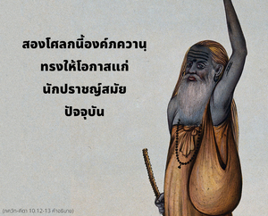

อรฺชุน ตรัสว่า พระองค์ทรงเป็นบุคลิกภาพสูงสุดแห่งพระเจ้า เป็นพระตำหนักสูงสุด เป็นผู้บริสุทธิ์ที่สุด เป็นสัจธรรม พระองค์ทรงเป็นอมตะ เป็นทิพย์ เป็นบุคคลแรก ไม่มีการเกิด เป็นผู้ยิ่งใหญ่ที่สุด นักปราชญ์ผู้ยิ่งใหญ่ทั้งหลาย เช่น นารท อสิต เทวล และ วฺยาส ได้ยืนยันความจริงนี้เกี่ยวกับพระองค์ บัดนี้พระองค์ทรงประกาศแก่ข้าด้วยพระองค์เอง

สองโศลกนี้องค์ภควานฺทรงให้โอกาสแก่นักปราชญ์สมัยปัจจุบันโดยกล่าวไว้อย่างชัดเจนว่า พระองค์ทรงแตกต่างจากปัจเจกวิญญาณ หลังจากสดับฟังสี่โศลกซึ่งเป็นหัวใจสำคัญของ ภควัท-คีตา ในบทนี้ อรฺชุน ทรงเป็นอิสระจากความสงสัยทั้งปวงโดยสิ้นเชิง และยอมรับว่าองค์กฺฤษฺณคือบุคลิกภาพสูงสุดแห่งพระเจ้า ทันใดนั้น อรฺชุน ทรงประกาศอย่างกล้าหาญว่า “พระองค์คือ ปรํ พฺรหฺม บุคลิกภาพสูงสุดแห่งพระเจ้า” ในอดีตองค์กฺฤษฺณตรัสว่าพระองค์ทรงเป็นผู้ให้กำเนิดทุกสิ่งทุกอย่าง และทุกชีวิต เทวดาทุกองค์ และมนุษย์ทุกคนขึ้นอยู่กับองค์กฺฤษฺณ แต่เนื่องด้วยอวิชชาเหล่ามนุษย์และเทวดาคิดว่าตนเองสมบูรณ์ และเป็นอิสระจากบุคลิกภาพสูงสุดแห่งพระเจ้า ด้วยการปฏิบัติการอุทิศตนเสียสละรับใช้อวิชชาจะถูกขจัดออกไปจนหมดสิ้น องค์ภควานฺทรงอธิบายไว้แล้วในโศลกก่อนหน้านี้ บัดนี้ด้วยพระกรุณาธิคุณขององค์ภควานฺ อรฺชุน ยอมรับพระองค์ว่าทรงเป็นสัจธรรมสูงสุดตามคำสอนพระเวท ไม่ใช่เพราะว่าองค์กฺฤษฺณทรงเป็นสหายสนิทแล้ว อรฺชุน ทรงยกยอองค์กฺฤษฺณด้วยการเรียกพระองค์ว่าบุคลิกภาพสูงสุดแห่งพระเจ้า สัจธรรมที่สมบูรณ์ สิ่งที่ อรฺชุน ตรัสในสองโศลกนี้สัจจะแห่งคัมภีร์พระเวทได้ยืนยันไว้ คำสั่งสอนพระเวทยืนยันว่าผู้ที่รับเอาการอุทิศตนเสียสละรับใช้ต่อองค์ภควานฺไปปฏิบัติเท่านั้น จึงจะสามารถเข้าใจพระองค์ได้ ในขณะที่บุคคลอื่นไม่สามารถเข้าใจได้ ทุกคำในโศลกนี้ที่ อรฺชุน ตรัสนั้นคำสอนพระเวทได้มีการยืนยันไว้
ใน เกน อุปนิษทฺ ได้กล่าวไว้ว่า พฺรหฺมนฺ สูงสุดเป็นที่พักพิงของทุกสิ่งทุกอย่าง และองค์กฺฤษฺณทรงอธิบายไว้แล้วว่าทุกสิ่งทุกอย่างพักพิงอยู่ที่พระองค์ มุณฺฑก อุปนิษทฺ ยืนยันว่าทุกสิ่งทุกอย่างพำนักอยู่ที่องค์ภควานฺ ผู้ปฏิบัติการระลึกถึงพระองค์อยู่ตลอดเวลาจึงสามารถเป็นผู้รู้แจ้ง การระลึกถึงองค์กฺฤษฺณอยู่ตลอดเวลา คือ สฺมรณมฺ ซึ่งเป็นวิธีการหนึ่งแห่งการอุทิศตนเสียสละรับใช้ การอุทิศตนเสียสละรับใช้แด่องค์กฺฤษฺณเท่านั้นที่ทำให้เราเข้าใจสถานภาพของตัวเราเอง และขจัดร่างกายวัตถุนี้ออกไปได้
คัมภีร์พระเวทยอมรับว่าองค์ภควานฺทรงเป็นผู้บริสุทธิ์ที่สุดในบรรดา ผู้บริสุทธิ์ผู้ที่เข้าใจว่าองค์กฺฤษฺณทรงเป็นผู้บริสุทธิ์ที่สุดในหมู่ผู้บริสุทธิ์ สามารถทำให้ตนเองบริสุทธิ์จากกิจกรรมบาปทั้งปวงได้ นอกจากเราจะศิโรราบต่อองค์ภควานฺเท่านั้น เราจึงจะสามารถขจัดเชื้อโรคแห่งการกระทำบาปทั้งหมดได้ อรฺชุน ยอมรับว่าองค์กฺฤษฺณทรงเป็นผู้บริสุทธิ์สูงสุดซึ่งเป็นไปตามคำสั่งสอนของวรรณกรรมพระเวท บุคลิกภาพผู้ยิ่งใหญ่ซึ่งนำโดย นารท ได้ยืนยันไว้เช่นเดียวกัน
องค์กฺฤษฺณทรงเป็นบุคลิกภาพสูงสุดแห่งพระเจ้าเราจึงควรทำสมาธิอยู่ที่พระองค์เสมอ และได้รับความสุขจากความสัมพันธ์ทิพย์ที่มีต่อองค์กฺฤษฺณ พระองค์ทรงเป็นผู้มีชีวิตที่สูงสุด ทรงเป็นอิสระจากความต้องการทางร่างกาย จากการเกิดและการตาย ไม่เพียงแต่ อรฺชุน เท่านั้นที่ทรงยืนยันเช่นนี้แต่วรรณกรรมพระเวททั้งหมด เช่น ปุราณ และประวัติศาสตร์ต่างๆก็ได้ยืนยันไว้เช่นกัน ในวรรณกรรมพระเวททั้งหมดได้อธิบายเกี่ยวกับองค์กฺฤษฺณไว้เช่นนี้ และองค์ภควานฺเองก็ตรัสในบทที่สี่ว่า “ถึงแม้ว่าข้าไม่มีการเกิด ข้ายังเสด็จมาบนโลกนี้เพื่อสถาปนาหลักธรรมแห่งศาสนา” พระองค์ทรงเป็นบุคคลแรกที่สูงสุด พระองค์ทรงไม่มีแหล่งกำเนิดเพราะทรงเป็นแหล่งกำเนิดของแหล่งกำเนิดทั้งปวง และทุกสิ่งทุกอย่างกำเนิดมาจากพระองค์ ความรู้อันสมบูรณ์เช่นนี้สามารถได้รับจากพระกรุณาธิคุณขององค์ภควานฺ
ณ ที่นี้ อรฺชุน ทรงแสดงตนเองผ่านทางพระกรุณาธิคุณขององค์กฺฤษฺณ หากเราปรารถนาจะเข้าใจ ภควัท-คีตา เราควรยอมรับข้อความจากสองโศลกนี้ อันนี้เรียกว่าระบบ ปรมฺปรา คือการรับสายปรัมปรา นอกเสียจากว่าเราจะอยู่ในระบบปรัมปราไม่เช่นนั้นเราก็จะไม่สามารถเข้าใจ ภควัท-คีตา ได้ สิ่งที่เรียกว่าการศึกษาทางวิชาการนั้นเป็นไปไม่ได้ที่จะเข้าใจ ภควัท-คีตา แต่พวกที่อับโชคที่โอหังกับการศึกษาทางวิชาการยังดื้อรั้น โดยเชื่อว่าองค์กฺฤษฺณทรงเป็นบุคคลธรรมดา ถึงแม้จะมีหลักฐานมากมายในวรรณกรรมพระเวทก็ตาม